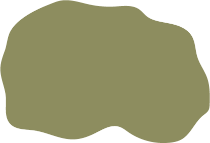

Розселення народів XVI-XVII ст.
| Українці (русини) | |
| Росіяни (московити) | |
| Білоруси (литвини) | |
| Поляки (ляхи) | |
| Словаки | |
| Болгари | |
| Німці (райони колонізації) | |
| Угорці | |
| Татари і ногаї | |
|  | Гагаузи (тюрки-християни, читаки) |
| Турки | |
| Румуни, молдавани (волохи) | |
| Адиги (черкеси) |
Локальне розселення окремих народів
| Євреїв | |
| Греків | |
| Вірменів |
| Землі, знелюднені через напади татар до середини XVI ст. і знову заселені українцями до середини ХVІІ ст. |